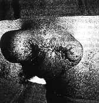

THE CIRCUMCISION REFERENCE LIBRARY
A non-psychotic adult attempted surgically to reconstruct a foreskin for himself. The patient's membership of an organization which lobbies against circumcision was contributory.
[CIRP Note: This paper is interesting in that it illustrates the cultural blindness of some authors that is often seen in circumcising cultures. The authors of this case report were unable to see that:
Circumcision has been viewed in the analytic literature as a symbolic form of castration (Freud, 1913) and also, opposingly, as an affirmation of masculinity (Nunberg, 1947). The proponents of either view could not have wished for more fertile ground on which to argue the salience of these constructs.
| Fig. 1. The patient's genitalia
after his own attempt at reconstructive surgery to restore his foreskin. |
 |
A 33-year-old circumcised boat-repairer presented to an emergency department after unsuccessfully attempting to refashion a foreskin for himself. He had allegedly acquired surgical equipment from an undisclosed `doctor friend'. The patient had become familiar with a staged reconstructive procedure through reading surgical texts and his membership of an organization which lobbies against circumcision. The patient had discontinued the first stage of the procedure when he was unable to control local bleeding. By then he had. in turn, `ring-barked' the base of his penis, dragged forward the scrotal skin and sutured this skin over his penis (Fig. 1).
The surgery had been carried out in a clear sensorium. The patient denied using anaesthetics, analgesics, or psychoactive compounds. There were no psychotic features and the patient derived no erotic gratification from the procedure.
The patient had been circumcised in infancy. He had been pre-occupied with his absent foreskin from the age of ten when he first learned about normal male anatomy at school. He had subsequently felt deformed and `incomplete'. Since his early 20s the patient had consulted a number of plastic surgeons to have a foreskin refashioned but was allegedly rejected by them. In his late 20s the patient had joined an American organization which campaigns against circumcision. He had received from the a variety of brochures detailing surgical and non-surgical reconstructive techniques. The patient had tried a non-invasive, stretching method to restore his foreskin, but this had not proved successful.
There had been one previous dysmorphophobic symptom which related to an asymptomatic congenital hernia of the left leg. Although the defect was trivial, the outcome of elective repair at age 23 was catastrophic. The development of post-operative infection necessitated extensive grafts of skin, tendon, and nerve tissue. The patient was admitted for many months and had a residual foot drop.
There was no previous formal psychiatric history. One of the patient's brothers was thought to have had anorexia nervosa, for which he had no treatment. There was no other family history of major psychiatric illness.
The patient recounted an emotionally deprived childhood. He was the eldest of three brothers. The patient's father, a museum curator, was remembered as punitive and distant. The patient's mother was more available but was perceived as having been affectionless. She had been preoccupied with trying to adopt a daughter throughout the patient's childhood and adolescence. She openly expressed her disappointment in having had sons and frequently criticised them. They were chided, for instance, for not having girlfriends when they first developed pubic hair. The patient described several brief heterosexual relationships from the age of 15 to 23. Some of these had been consummated. The patient would terminate these relationships when he began to feel `smothered', and had avoided them altogether since his leg surgery, channeling all his energies into rehabilitation. The patient considered that his core gender identity, gender role behaviour, and sexual orientation were male heterosexual. He denied deviant sexual activity or fantasy.
The patient described pre-morbid obsessional and narcissistic traits, He was hypochondriacal in his pursuit of health and bodily perfection. He regularly attended a gymnasium and was fastidious in his diet.
On admission he was a handsome, small-framed man who walked with a slight limp. He was remarkably calm and composed, and not at all distressed. There was no formal thought disorder. The patient spoke eloquently. The themes of his speech concerned his parents violating his rights by having hirn circumcised and his wanting to feel `complete'. On invitation, he generalized these views to the regrettable practice of routine circumcision in infancy. There were no delusions, no hallucinations, and no passivity phenomena. The patient was orientated in time, place, and person. Clinical cognitive testing revealed no other abnormality.
No further physical or psychological investigations were performed. Thc patient's self-inflicted wound was repaired shortly after admission and he was discharged after four days. As arranged, he presented for review on two further occasions over the next month. His mental state was unchanged. He remained keen to have a foreskin reconstructed.
The nature and dramatic culmination of the patient's dysmorphophobic symptoms may be understood in terms of a childhood during which he was demoralised, emasculated, and deprived of recognition. This experience resulted in a damaged self-image and fragile personality structure, characterised by a preoccupation with health and physical appearance. The patient's decisions to correct perceived deformity may be interpreted as endeavours to repair his damaged self-image and restore his self-worth.
The literature suggests that many patients with dysmorphophobia do not have a major psychiatric illness (Birtchnell, 1988). These individuals are often found to be sensitive and/or insecure (Hay, 1970), and to possess schizoid, narcissistic, and obsessional traits (Thomas, 1984), without attracting the diagnosis of personality disorder. The patient in this report demonstrated all of these characteristics. However. the case is unusual from the following perspectives.
Two groups of circumcised males who seek surgical reconstruction of their foreskins have been previously identified. The first group consists of Jews who have wished to disguise their identities during times of political crisis (e.g. Levin, 1976). The second group comprises homosexuals who associate their circumcised status with a sense of incompleteness, unwanted masculinity, and anger over having no choice in their circumcision (Mohl et al, 1981). Our patient was neither Jewish nor apparently homosexual. Moreover, he not only sought foreskin restoration but planned and proceeded to attempt the surgery himself.
The case is also unusual because most genital self-mutilation is associated with psychosis (Greilsheimer & Groves, 1979). The authors recognise that some patients with dysmorphophobia who are not psychotic on first presentation may become psychotic subsequently (Hay, 1983). Nevertheless. several reports of non-psychotic genital self-mutilation have been documented in the literature. There have been accounts (e.g. Haberman & Michael, 1979) of non-psychotic transsexuals who have castrated themselves, descriptions of genital self-mutilation as part of tribal ritual (Cawte et al, 1966) and, more recently. reports of individuals who mutilate their genitals for erotic purposes (e.g. Wan et al, 1985). There have also been other accounts (Thompson & Abraham, l983) of non-psychotic genital self-mutilation which do not fit into any of these categories. The present case and the above examples suggest that non-psychotic genital self-mutilation, while uncommon, may not be as rare as is generally stated.
The authors would like to thank the library staff of the Royal North Shore Hospital for their assistance.
Garry Walter, MB, BS, Registrar in
Psychiatry, The Northside Clinic,
Sydney;
Jeffrey Streimer, FRANZCP, Consultion-liasion Psychiatrist,
The
Royal North Shore Hospital, Sydney,
Australia
Correspondence: 7 Arding St, Lane Cove, NSW, 2066, Australia
http://www.cirp.org/library/psych/walter/